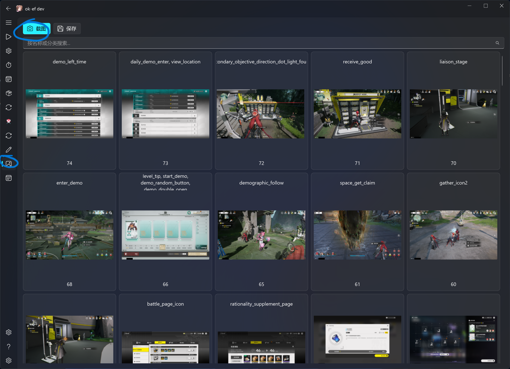
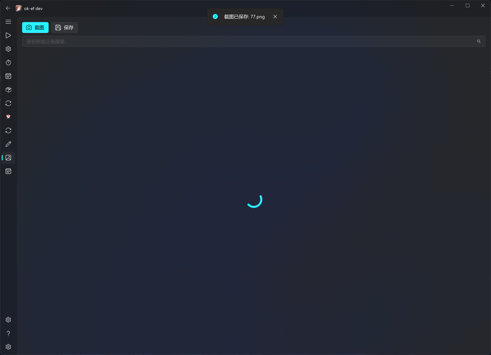
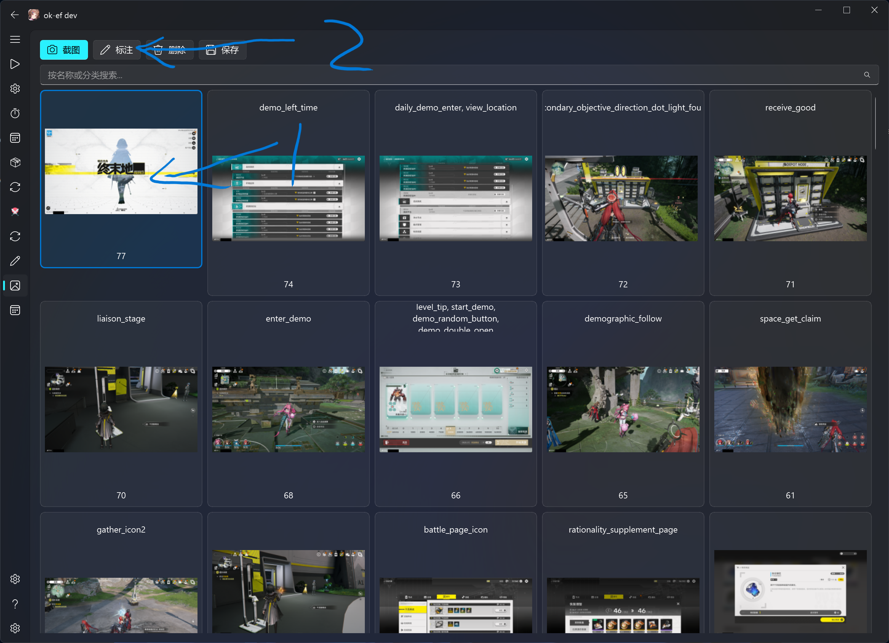
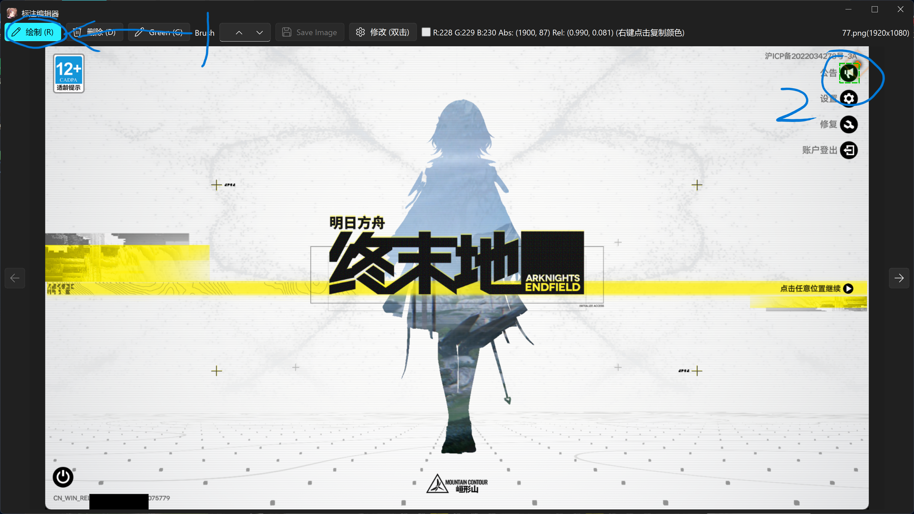
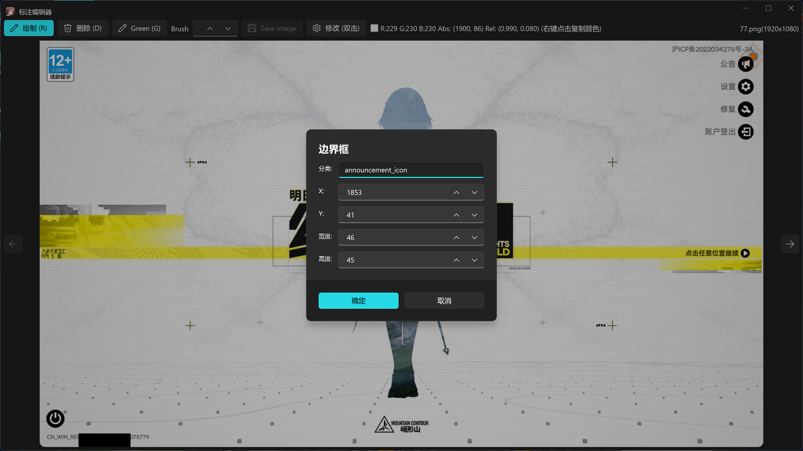
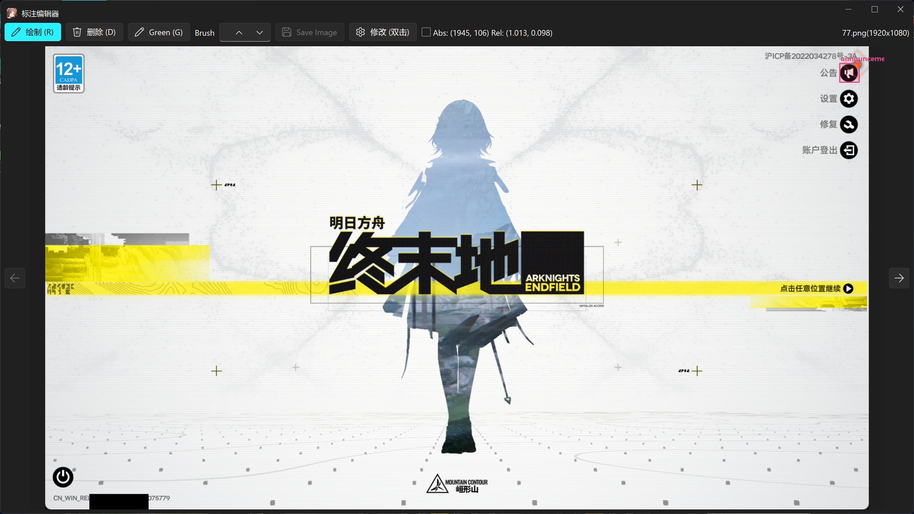
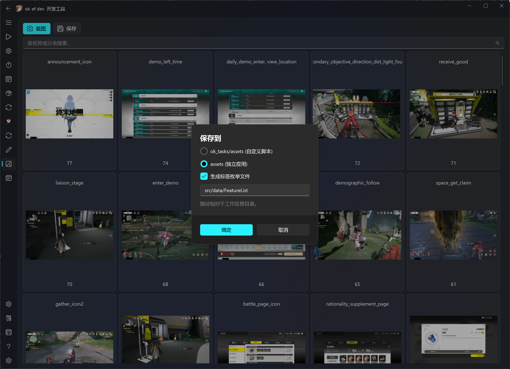
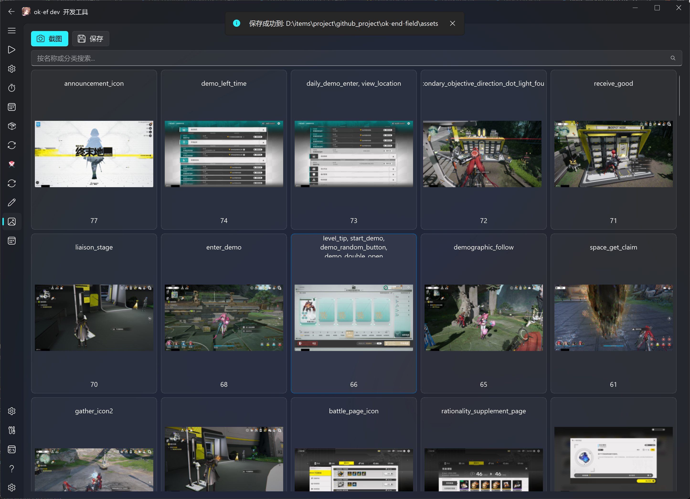

修改模板快速开始
面向
AliceJump/ok-end-field无权限贡献者，专用于修改游戏截图模板。
仓库 角色 AliceJump/ok-end-field上游主仓库 AliceJump/ok-end-field-x-anylabeling-asset模板源文件 ( ok_templates/，submodule，默认分支main)你的账号/...你的两份 fork
先搞懂架构
ok_templates/ (子仓库: 原始 PNG + 对应 AnyLabeling JSON + coco_annotations.json)
│ TemplateTab → Save → "assets (standalone app)"
▼
assets/images/ + assets/coco_annotations.json (主仓库生成物)
src/data/FeatureList.py (主仓库生成的标签枚举)
│
▼
self.find_feature(feature=fL.xxx)
→ RuntimeMixin.find_feature
→ get_feature_by_resolution (基础名 / _2k / _4k)
→ ok-script BaseTask.find_feature / FeatureSet
→ OpenCV 模板匹配
关键：
ok_templates/中与截图同名的原始 PNG、标注 JSON 以及汇总的coco_annotations.json才是模板源码；主仓库的assets/images/、assets/coco_annotations.json和src/data/FeatureList.py是 Save 生成物。模板改动必须同时提交子仓库源码和主仓库生成物。
完整工作流
① Fork 两个仓库
| 仓库 | 操作 |
|---|---|
AliceJump/ok-end-field |
GitHub → Fork |
AliceJump/ok-end-field-x-anylabeling-asset |
GitHub → Fork |
② Clone（含 submodule）
git clone --recursive https://github.com/你的账号/ok-end-field.git
cd ok-end-field
git remote add upstream https://github.com/AliceJump/ok-end-field.git
git fetch upstream
git switch -c update-templates upstream/master
如果已 clone 但没初始化：
git submodule update --init ok_templates
主仓库的 origin 应指向你的 fork，upstream 应指向 AliceJump/ok-end-field。主仓库当前默认分支是 master；提交前应确认功能分支基于最新的 upstream/master。
③ 配置子仓库 remote → 从 main 签出分支
cd ok_templates
git remote rename origin upstream
git remote add origin https://github.com/你的账号/ok-end-field-x-anylabeling-asset.git
git fetch --all --prune
git switch --create main --track upstream/main
git switch -c update-x-template
git remote -v
cd ..
初始化 submodule 后通常处于 detached HEAD，且 .gitmodules 配置的 origin 指向上游。上面的命令将该 remote 保留为 upstream，再把你的 fork 设为可推送的 origin。如果本地已经存在 main，使用 git switch main 和 git pull --ff-only upstream main，不要再次执行 --create。
④ 修改模板（TemplateTab GUI）
python main.py
Step 1 — 截图
① 点击 Screenshot

截图自动保存到 ok_templates/，推荐 3840×2160 全屏截图。
② 截图完成后出现在列表中

Step 2 — 标注
选中图片 → 点击 Markup
③ Markup 界面

④ 点击绘制 → 框选目标元素（左上→右下）

⑤ 输入模板名 → 确认

标签名必须与
src/data/FeatureList.py中的值及代码调用一致。当前约定是小写英文snake_case，按语义使用前缀/后缀，例如角色联络头像用contact_<name>，战斗头像用battle_icon_<name>，图标用<name>_icon，同类变体用_2、_3。分辨率专用模板只追加_2k或_4k；代码通常传不带分辨率后缀的基础名，例如self.find_feature(feature=fL.esc)，由get_feature_by_resolution()按窗口宽度选择esc、esc_2k或esc_4k。不要沿用仓库中不存在的char_、box_等旧前缀约定。
⑥ 标注完成

Step 3 — 压缩导出
点击 Save → 选择 "assets (standalone app)" → OK
⑦ 选择导出目标

⑧ 导出完成

Step 4 — 验证
cd ok_templates
git status --short --branch
git diff --stat
git diff -- coco_annotations.json
cd ..
git submodule status
git status --short
git diff --submodule=log -- ok_templates
git diff --stat -- assets/coco_annotations.json assets/images src/data/FeatureList.py
git diff -- assets/coco_annotations.json src/data/FeatureList.py
还应在 Debug 模式实际调用对应基础标签，确认 1080p/2K/4K 的后缀选择和搜索区域都能命中。提交暂存后，再运行以下命令确认 PR 包含完整内容：
git diff --cached --submodule=log -- ok_templates
git diff --cached --stat -- assets/coco_annotations.json assets/images src/data/FeatureList.py
git status --short
⑤ 推送子仓库
cd ok_templates
git add .
git diff --cached --stat
git diff --cached -- coco_annotations.json
git commit -m "feat: add X template"
git push -u origin update-x-template
⑥ 创建子仓库 PR
你的账号/ok-end-field-x-anylabeling-asset:update-x-template → PR → AliceJump/ok-end-field-x-anylabeling-asset:main
⚠️ 必须先等此 PR 合并再继续。
⑦ 子仓库合并后 → 更新主仓库 PR
cd ok_templates
git fetch upstream
git switch main
git pull --ff-only upstream main
cd ..
python main.py # TemplateTab → Save → "assets (standalone app)"
git add ok_templates assets/coco_annotations.json assets/images src/data/FeatureList.py
git diff --cached --submodule=log -- ok_templates
git diff --cached --stat -- assets/coco_annotations.json assets/images src/data/FeatureList.py
git commit -m "feat: update templates and submodule"
git push -u origin update-templates
git status --short --branch
git submodule status
git diff --check upstream/master...HEAD
git diff --stat upstream/master...HEAD
git diff --submodule=log upstream/master...HEAD -- ok_templates
创建 PR：
你的账号/ok-end-field → PR → AliceJump/ok-end-field
常见错误
| 错误 | 原因 | 解决 |
|---|---|---|
Permission denied push 失败 |
remote 仍指向上游 | git remote set-url origin 改到你的 fork |
git submodule status 出现 + |
子仓库当前 checkout 的 commit 与主仓库索引记录的 gitlink 不同；不表示该 commit 一定“不在上游” | 用 git diff --submodule=log -- ok_templates 确认差异；应更新时在主仓库暂存 ok_templates，不应更新时切回索引记录的 commit |
git submodule status 出现 - / U |
- 表示未初始化；U 表示 gitlink 有合并冲突 |
初始化 submodule；冲突则先在子仓库选定正确 commit，再在主仓库暂存 gitlink |
submodule dirty |
未提交修改 | cd ok_templates && git status |
找不到模板 not found in featureDict |
没 compress / 名称不对应 | 确认 category name 与代码调用一致 |
cv2.error |
模板比搜索区域大 | 检查 bbox 范围 |
速查
# 初始化
git clone --recursive https://github.com/你的账号/ok-end-field.git
cd ok-end-field
# 改 remote
cd ok_templates
git remote rename origin upstream
git remote add origin https://github.com/你的账号/ok-end-field-x-anylabeling-asset.git
git fetch --all --prune
git switch --create main --track upstream/main
git switch -c update-x-template
cd ..
# 修改模板 → 压缩导出
python main.py
# Screenshot → Markup(框选+命名) → Save(assets)
# 推子仓库
cd ok_templates
git add . && git diff --cached --stat && git commit -m "feat: add X template" && git push -u origin update-x-template
# → 创建 SubRepo PR，等合并
# 子仓库合并后
cd ok_templates
git fetch upstream && git switch main && git pull --ff-only upstream main
cd ..
python main.py # TemplateTab → Save
git add ok_templates assets/coco_annotations.json assets/images src/data/FeatureList.py
git diff --cached --submodule=log -- ok_templates
git diff --cached --stat -- assets/coco_annotations.json assets/images src/data/FeatureList.py
git commit -m "feat: update templates" && git push -u origin update-templates
# → 创建 MainRepo PR
一句话：改子仓库 → compress → 子仓库 PR → 子仓库合并 → 重新 compress → 主仓库 PR。
 在 GitHub 查看源文件 ↗
在 GitHub 查看源文件 ↗